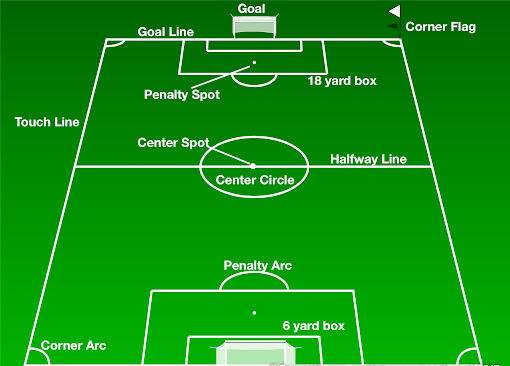
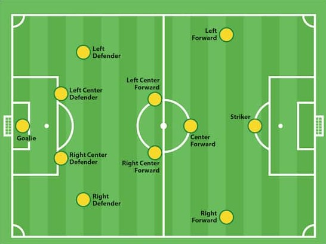

GAMEPLAY:
⚽ Most soccer games consist of a total of 22 players on the field, 11 players for each of the 2 teams on the field, with a few substitutes on each bench. Youth games or special games such as indoor soccer of futsal may contain less players.
⚽ A single referee within the field, mostly along the center of field and 2 other sideline referees, standing on opposite sides of the sides where the goals are not present. The center referee is there to primary call fouls, and the side referee's are there to primarily call offsides.
⚽ The objective of the game is to put the ball on the opposite teams goal; illegal to score with your hands or arms. A point is rewarded for each ball put into the goal.
⚽ Corner flags are placed on each corner of the field.
⚽ Most games consist of 90 minutes; 45 minutes each half. In youth games this may be less.
POSITIONS:
⚽ The main positions are GoalKeeper, Defender, MidFielder, Attacker. These positions can be mixed depending on the formation the team decides to play.
⚽ MUST have GoalKeeper, cannot play without one.
RULES:
⚽ ONLY the GoalKeeper is allowed to use hands, as long as they are within the 18 yard box, they are allowed to use other parts at anytime. Other players may not use ther hands, but are allowed to use everything else. NOTE: These other players are allowed to use hands on a throwin; throwin's will be explained down below.
⚽ ANY tackle of some sort towards another opposing player is called a foul. Pushing is called a foul. Use of any body part against another player that is deemed by the referee to be too aggressive will be called a foul.
⚽ Fouls that are called primarily by the center referee, and a player could possibly be given the fallowing two cards depending on the situation.Red Card: meaning the player is thrown out of the game and may serve future match bans. Yellow card: meaning the player is issued a caution and is still able to stay on the field and play. A 2nd Yellow Card: Meaning another Yellow card will be displayed to the player, which turns into a Red card, that will result in the player to be removed from the game
⚽ A foul maybe called but if deemed not too aggressive but a little reckless by the referee, then no card will be awarded only a verbal warning.
⚽ In an event of any foul a freekick is awarded to the opposing team. A freekick is where a single player chosen from the awarded team, places the ball where the foul is committed and kicks the ball back into play, or into the goal.
⚽ If a foul was called on the defending team in their own 18 yard box, then a penalty kick is awarded to the opposing team. In a penalty kick a single player chosen from the awarded team, places the ball on the penalty spot, and gets to have a shot one on one versus the goalkeeper. All of the other players are to be on the edge of the 18 yard box, and the penalty arc, where they may not interfere with the play, until it has been kicked/touched by the player taking the shot.
⚽ A ball kicked out from the field that crossed the side line, the sides where the goals are NOT present, results in a throwin for the team that did not kick the ball out. A player is chosen from the awarded team and throws the ball back into play from the where the ball crossed the sideline.
⚽ A ball kicked out from field that crossed the end line, the sides where the goal IS present, results in either a goal kick or a corner kick. This actions results in a goal kick if the attacking team kicked the ball out. This action results in a corner kick if the defending team kicked the ball out.
⚽ In an event of a goal kick the opposing goalkeeper, of the attacking team, places the ball on the six yard box(gaolkeeper's box) and restarts the play from there with a kick. In an event of a corner kick, the opposing team of the defending teams, chooses a single player to kick the ball back into play from the corner flag. The designated corner flag is determined by the direction of the ball from where it went out of play.
⚽ An offsides call is called when an attacking team attempts to play a ball to one of its players that is behind the last defender of the defending team. If the ball left the foot of the passer while the other teammate is behind the last defender of the defending side, then it is called. If not, or if this incident happens on the attacking teams half, then offsides is not called.
* For more information on gameplay and rules visit FifaLawsOfTheGame